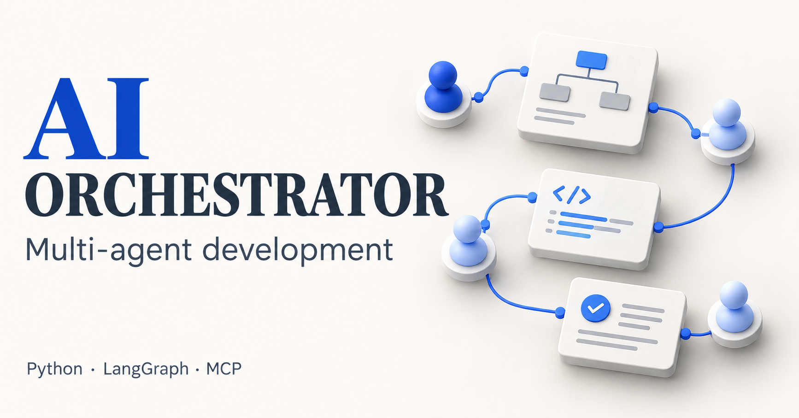

Multi-agent orchestration
AI Orchestrator
A LangGraph software-team prototype: architect and reviewer roles, parallel backend/frontend work, test gates, state reducers and bounded human escalation.
Implemented prototype; offline routing tests included
- LangGraph
- Python
- Tool use